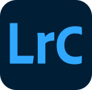
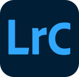

Om mig
Typografi er ikke bare bogstaver - det er tonefald. Farver er ikke pynt - de er stemninger.
Jeg har en bachelor i Idræt og Sundhed og en baggrund som eliteatlet. Tiden som atlet har lært mig mere end at løbe stærkt og stå tidligt op. Den har givet mig en høj arbejdsmoral, vedholdenhed, og en naturlig evne til at indgå i samarbejde – kvaliteter, jeg nu bringer med mig ind i den kreative verden.
Da jeg lagde sportskarrieren på hylden, begyndte jeg at udforske nye måder at udtrykke mig på. Små grafiske eksperimenter blev til større projekter. Jeg opdagede, hvor meget stemning der kan ligge i en farvekombination, hvor meget karakter der kan være i et snit. Og hvor stærkt design kan tale, når det lykkes at få form og fortælling til at spille sammen.
Jeg er særligt optaget af branding og visuel kommunikation , og jeg elsker at fordybe mig i grafiske projekter, der engagerer, inspirerer og forbinder mennesker. Jeg er altid klar til nye udfordringer og ser frem til at samarbejde med passionerede teams, der sætter kvalitet og kreativitet i højsæde,
Lyder det som jer?
Så lad os tage en snak!
Min værktøjskasse
 

Faglig anbefaling: “En gevinst for enhver arbejdsgiver”
I egenskab af lektor ved Institut for Idræt og Biomekanik ved Syddansk Universitet mødte jeg Josefine i forskellige faglige kontekster over en 5-årig periode. Senest fungerede jeg som specialevejleder for hende.
I mange år har jeg skrevet anbefalinger for studerende, men det er sjældent, at man ville ønske, man selv kunne ansætte personen. Og når man skriver at man medgiver de bedste anbefalinger, så er det sjældent, at det helt er tilfældet. I dette tilfælde så er der tale om en studerende som jeg til enhver tid vil kunne stå inde for og jeg medgiver hende de absolut bedste og mest rosende ord.
Josefine er en ydmyg, højintelligent pige med et stærkt analytisk blik på livet generelt og faglige stofområder i særdeleshed. Hun er meget produktiv, flittig og mødestabil. Hun er i stand til at løse såvel bundne som frie opgaver med stor selvstændighed.
Uanset hvilke stillingstyper Josefine vælger at søge, så er det min vurdering, at hun vil blive en gevinst for sin arbejdsgiver. Giv hende lidt ansvar, og så vil hun hurtigt kunne blive en vigtig og betydelig ansat.
Jan Toftegaard Støckel